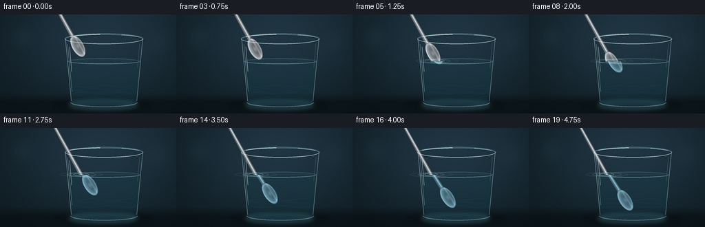
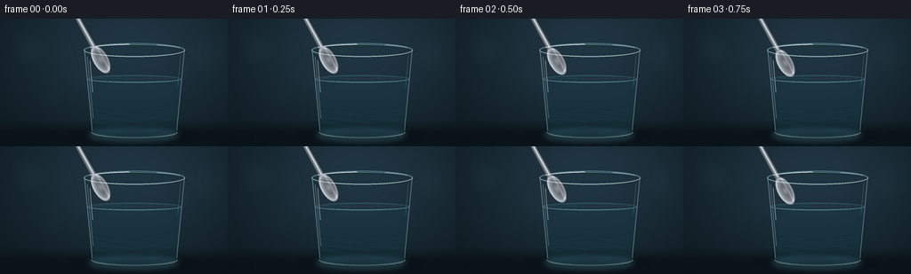

CODING AGENTS AS PIXEL WORLD MODELS
traex/GPT-5.6-Sol · phygen_072
点击播放 · 原生 RGB 像素
逐轮保存的候选
回放视频、检查图与代码变化。
每份候选均可单独播放。实际图片检查记录在下方工具轨迹中。
候选 01播放与检查图
点击播放 · 原生 RGB 像素


展开代码变化
--- 上一保存版本
+++ 本次保存版本
@@ -0,0 +1,311 @@
+from pathlib import Path
+import json
+import math
+
+import numpy as np
+from PIL import Image, ImageDraw, ImageFilter
+
+import artifact_io
+
+
+CASE_DIR = Path(__file__).resolve().parent
+SPEC = json.loads((CASE_DIR / "task_spec.json").read_text())
+W, H = SPEC["width"], SPEC["height"]
+N = SPEC["frames"]
+S = 4 # supersampling gives the thin glass highlights clean edges
+SW, SH = W * S, H * S
+
+
+def sc(v):
+ return int(round(v * S))
+
+
+def box(b):
+ return tuple(sc(v) for v in b)
+
+
+def points(ps):
+ return [(sc(x), sc(y)) for x, y in ps]
+
+
+def overlay(base, layer):
+ return Image.alpha_composite(base, layer)
+
+
+def smoothstep(x):
+ x = max(0.0, min(1.0, x))
+ return x * x * (3.0 - 2.0 * x)
+
+
+# Coordinate grids, reused by the procedural shading layers.
+YY, XX = np.mgrid[0:SH, 0:SW].astype(np.float32)
+XX /= S
+YY /= S
+
+
+def make_background():
+ """Quiet studio background and a dark polished tabletop."""
+ x = XX / W
+ y = YY / H
+ radial = np.exp(-(((x - .57) / .56) ** 2 + ((y - .36) / .72) ** 2))
+ vertical = 1.0 - .42 * y
+ bg = np.empty((SH, SW, 4), dtype=np.uint8)
+ bg[..., 0] = np.clip(13 + 22 * radial * vertical, 0, 255)
+ bg[..., 1] = np.clip(24 + 34 * radial * vertical, 0, 255)
+ bg[..., 2] = np.clip(30 + 42 * radial * vertical, 0, 255)
+ bg[..., 3] = 255
+ im = Image.fromarray(bg, "RGBA")
+
+ # Out-of-focus highlights create depth without competing with the subject.
+ bokeh = Image.new("RGBA", (SW, SH), (0, 0, 0, 0))
+ d = ImageDraw.Draw(bokeh)
+ d.ellipse(box((12, 13, 53, 54)), fill=(92, 141, 150, 17))
+ d.ellipse(box((208, 18, 251, 61)), fill=(96, 139, 148, 11))
+ d.ellipse(box((45, 76, 74, 105)), fill=(75, 130, 143, 10))
+ bokeh = bokeh.filter(ImageFilter.GaussianBlur(sc(10)))
+ im = overlay(im, bokeh)
+
+ table = Image.new("RGBA", (SW, SH), (0, 0, 0, 0))
+ td = ImageDraw.Draw(table)
+ td.rectangle(box((0, 120, W, H)), fill=(7, 15, 19, 175))
+ td.line(points([(0, 120), (W, 120)]), fill=(115, 173, 177, 18), width=sc(.55))
+ # Broad contact shadow and a subtle reflection under the glass.
+ td.ellipse(box((77, 122, 220, 141)), fill=(0, 2, 4, 125))
+ td.ellipse(box((101, 125, 199, 137)), fill=(92, 154, 164, 13))
+ table = table.filter(ImageFilter.GaussianBlur(sc(3.2)))
+ return overlay(im, table)
+
+
+BACKGROUND = make_background()
+
+
+def glass_interior_mask(y_top=34.0, y_bottom=132.0):
+ mask = Image.new("L", (SW, SH), 0)
+ d = ImageDraw.Draw(mask)
+ d.polygon(points([(94, y_top), (208, y_top), (198, y_bottom),
+ (104, y_bottom)]), fill=255)
+ return mask
+
+
+GLASS_MASK = glass_interior_mask()
+
+
+def water_layer(frame_index, water_y=68.0):
+ """Very clear water: most of its visibility comes from edges and caustics."""
+ # A restrained blue-green absorption gradient.
+ depth = np.clip((YY - water_y) / 66.0, 0, 1)
+ side = np.clip(np.abs(XX - 151) / 57.0, 0, 1)
+ arr = np.zeros((SH, SW, 4), dtype=np.uint8)
+ arr[..., 0] = (21 + 9 * depth).astype(np.uint8)
+ arr[..., 1] = (91 + 21 * depth).astype(np.uint8)
+ arr[..., 2] = (111 + 27 * depth).astype(np.uint8)
+ arr[..., 3] = np.clip(12 + 12 * depth + 7 * side, 0, 34).astype(np.uint8)
+ layer = Image.fromarray(arr, "RGBA")
+
+ mask = Image.new("L", (SW, SH), 0)
+ md = ImageDraw.Draw(mask)
+ md.polygon(points([(98, water_y), (204, water_y), (197.4, 128.5),
+ (104.6, 128.5)]), fill=255)
+ # Slightly curved lower boundary of the liquid volume.
+ md.ellipse(box((104.5, 123.5, 197.5, 133.0)), fill=255)
+ layer.putalpha(Image.composite(layer.getchannel("A"), Image.new("L", (SW, SH), 0), mask))
+
+ # Slowly drifting optical caustics on the lower half of the glass.
+ caustic = Image.new("RGBA", (SW, SH), (0, 0, 0, 0))
+ cd = ImageDraw.Draw(caustic)
+ phase = frame_index * .17
+ for k in range(5):
+ yy = 104 + k * 5.0
+ path = []
+ for j in range(45):
+ x = 106 + j * 2.0
+ y = yy + 1.4 * math.sin(x * .115 + phase + k * 1.7)
+ path.append((x, y))
+ cd.line(points(path), fill=(162, 230, 233, 10 if k % 2 else 15), width=sc(.55))
+ caustic.putalpha(Image.composite(caustic.getchannel("A"), Image.new("L", (SW, SH), 0), mask))
+ return overlay(layer, caustic)
+
+
+def spoon_rgba(bx, by, dx=.485, dy=.875, underwater=False):
+ """Rasterize a shaded silver spoon from analytic local coordinates."""
+ # The local y-axis u follows the spoon from handle to bowl tip.
+ mag = math.hypot(dx, dy)
+ dx, dy = dx / mag, dy / mag
+ px, py = -dy, dx
+ rx = XX - bx
+ ry = YY - by
+ u = rx * dx + ry * dy
+ v = rx * px + ry * py
+
+ half = 1.75 + 1.2 * np.clip((u + 155.0) / 142.0, 0, 1)
+ handle = (u >= -157) & (u <= -11.5) & (np.abs(v) <= half)
+ bowl_e = np.sqrt((u / 17.2) ** 2 + (v / 8.5) ** 2)
+ bowl = bowl_e <= 1.0
+ shape = handle | bowl
+
+ # Cool steel palette; narrow highlights follow the curved metal.
+ out = np.zeros((SH, SW, 4), dtype=np.uint8)
+ h_edge = np.clip(np.abs(v) / np.maximum(half, .01), 0, 1)
+ h_lum = 88 + 88 * (1 - h_edge) + 65 * np.exp(-((v + .55) / .62) ** 2)
+ h_lum -= 26 * np.exp(-((v - 1.45) / .45) ** 2)
+
+ edge = np.clip(bowl_e, 0, 1)
+ concave = 104 + 58 * (v / 8.5 + 1) / 2
+ concave += 45 * np.exp(-((v + 3.0) / 1.25) ** 2)
+ concave += 48 * np.exp(-((edge - .88) / .10) ** 2)
+ concave -= 36 * np.exp(-((edge - .35) / .26) ** 2)
+ concave += 17 * np.cos((u / 17.2) * math.pi) * (1 - edge)
+
+ lum = np.where(bowl, concave, h_lum)
+ # A dark outer rim makes the bowl read clearly against clear water.
+ lum = np.where(bowl & (edge > .955), 72 + 95 * np.clip((v + 8.5) / 17, 0, 1), lum)
+ if underwater:
+ r = lum * .72
+ g = lum * .91 + 13
+ b = lum * .98 + 20
+ alpha = 224
+ else:
+ r = lum * .94 + 7
+ g = lum * .98 + 8
+ b = lum + 11
+ alpha = 252
+ out[..., 0] = np.clip(r, 0, 255).astype(np.uint8)
+ out[..., 1] = np.clip(g, 0, 255).astype(np.uint8)
+ out[..., 2] = np.clip(b, 0, 255).astype(np.uint8)
+ out[..., 3] = np.where(shape, alpha, 0).astype(np.uint8)
+ return Image.fromarray(out, "RGBA")
+
+
+def clipped_layer(layer, predicate_mask):
+ old_a = np.asarray(layer.getchannel("A"), dtype=np.uint8)
+ m = np.asarray(predicate_mask, dtype=np.uint8)
+ new_a = ((old_a.astype(np.uint16) * m.astype(np.uint16)) // 255).astype(np.uint8)
+ layer = layer.copy()
+ layer.putalpha(Image.fromarray(new_a, "L"))
+ return layer
+
+
+def air_water_masks(water_y=68.0):
+ air = Image.new("L", (SW, SH), 0)
+ wet = Image.new("L", (SW, SH), 0)
+ ImageDraw.Draw(air).rectangle((0, 0, SW, sc(water_y + .1)), fill=255)
+ ImageDraw.Draw(wet).rectangle((0, sc(water_y - .1), SW, SH), fill=255)
+ # Spoon is seen only through the glass interior below the liquid line.
+ wet = Image.fromarray(np.minimum(np.asarray(wet), np.asarray(GLASS_MASK)).astype(np.uint8), "L")
+ return air, wet
+
+
+AIR_MASK, WET_MASK = air_water_masks()
+
+
+def back_glass():
+ layer = Image.new("RGBA", (SW, SH), (0, 0, 0, 0))
+ d = ImageDraw.Draw(layer)
+ # Rear lip and the dim rear wall contours.
+ d.ellipse(box((94, 27.5, 208, 43)), outline=(177, 225, 229, 62), width=sc(1.05))
+ d.ellipse(box((97, 30.0, 205, 40.5)), outline=(9, 36, 43, 115), width=sc(.9))
+ d.arc(box((95, 29, 207, 42)), 183, 357, fill=(221, 249, 248, 94), width=sc(.7))
+ d.line(points([(95, 35), (103.5, 126)]), fill=(140, 210, 218, 38), width=sc(1.05))
+ d.line(points([(207, 35), (198.5, 126)]), fill=(132, 206, 214, 34), width=sc(1.0))
+ return layer
+
+
+BACK_GLASS = back_glass()
+
+
+def front_glass_and_surface(frame_index, intersection_x=None):
+ layer = Image.new("RGBA", (SW, SH), (0, 0, 0, 0))
+ d = ImageDraw.Draw(layer)
+
+ # Waterline: transparent ellipse, brighter at grazing angles.
+ d.ellipse(box((98.2, 63.7, 203.8, 72.2)), outline=(142, 224, 230, 70), width=sc(.75))
+ d.arc(box((99.0, 64.5, 203.0, 71.8)), 3, 177, fill=(206, 250, 248, 104), width=sc(.72))
+ d.arc(box((99.5, 65.0, 202.5, 72.0)), 185, 350, fill=(30, 108, 126, 64), width=sc(.65))
+ d.line(points([(104, 67.2), (195, 67.2)]), fill=(202, 244, 242, 25), width=sc(.45))
+
+ # Ripples only appear once the spoon has actually broken the surface.
+ if intersection_x is not None:
+ phase = frame_index * .65
+ widths = [10.5 + 1.1 * math.sin(phase), 20 + 1.4 * math.sin(phase + 1.2), 31]
+ alphas = [142, 79, 36]
+ for rw, a in zip(widths, alphas):
+ d.ellipse(box((intersection_x-rw, 66.0-rw*.045,
+ intersection_x+rw, 69.3+rw*.045)),
+ outline=(205, 252, 249, a), width=sc(.55))
+ d.arc(box((intersection_x-8, 65.8, intersection_x+9, 70.2)),
+ 185, 345, fill=(29, 91, 105, 100), width=sc(.55))
+
+ # Front wall, heavy foot, and asymmetrical photographic highlights.
+ d.line(points([(94.8, 34.5), (103.5, 126)]), fill=(201, 238, 239, 96), width=sc(.72))
+ d.line(points([(207.2, 34.5), (198.5, 126)]), fill=(190, 236, 239, 90), width=sc(.72))
+ d.line(points([(98.1, 43), (104.4, 112)]), fill=(247, 255, 254, 76), width=sc(.72))
+ d.line(points([(101.1, 47), (104.0, 83)]), fill=(255, 255, 255, 127), width=sc(.7))
+ d.line(points([(202.8, 42), (199.6, 77)]), fill=(227, 253, 252, 56), width=sc(.55))
+ d.arc(box((103, 121.0, 199, 135)), 0, 180, fill=(174, 232, 234, 53), width=sc(.8))
+ d.arc(box((102, 120.2, 200, 134.4)), 4, 176, fill=(225, 252, 249, 104), width=sc(1.0))
+ d.arc(box((104, 124.0, 198, 135.0)), 8, 172, fill=(51, 121, 133, 76), width=sc(.9))
+ d.arc(box((94, 27.5, 208, 43)), 1, 179, fill=(236, 255, 253, 147), width=sc(.9))
+ d.arc(box((94, 27.5, 208, 43)), 181, 359, fill=(115, 190, 199, 87), width=sc(.75))
+ d.arc(box((97, 30.0, 205, 40.5)), 2, 178, fill=(33, 79, 88, 106), width=sc(.62))
+ # Little rim gleams.
+ d.arc(box((96, 28.4, 206, 41.7)), 205, 264, fill=(255, 255, 255, 212), width=sc(.8))
+ d.arc(box((96, 28.4, 206, 41.7)), 298, 338, fill=(231, 255, 255, 129), width=sc(.7))
+ return layer
+
+
+def render_frame(i):
+ t = i / (N - 1)
+ e = smoothstep(t)
+ # The bowl begins just above the water and ends deep in the tumbler.
+ bx = 113.0 + 22.0 * e
+ by = 46.0 + 61.0 * e
+ dx, dy = .485, .875
+ water_y = 68.0
+
+ frame = BACKGROUND.copy()
+ frame = overlay(frame, BACK_GLASS)
+ frame = overlay(frame, water_layer(i, water_y))
+
+ # Dry portion in its true position.
+ air_spoon = clipped_layer(spoon_rgba(bx, by, dx, dy, False), AIR_MASK)
+ frame = overlay(frame, air_spoon)
+
+ # Apparent underwater position: lateral displacement, foreshortening,
+ # magnification, and blue absorption produce the characteristic "bend".
+ bx2 = bx + 3.35 + .045 * (by - water_y)
+ by2 = water_y + .945 * (by - water_y)
+ dx2 = dx + .045 * dy
+ dy2 = .945 * dy
+ wet_spoon = clipped_layer(spoon_rgba(bx2, by2, dx2, dy2, True), WET_MASK)
+ frame = overlay(frame, wet_spoon)
+
+ # A faint veil of water in front integrates the submerged metal.
+ veil = Image.new("RGBA", (SW, SH), (28, 120, 141, 9))
+ veil = clipped_layer(veil, WET_MASK)
+ frame = overlay(frame, veil)
+
+ # Determine whether the spoon axis has crossed the liquid plane.
+ u_cross = (water_y - by) / dy
+ crossing = -157 <= u_cross <= 17.2
+ intersection_x = bx + dx * u_cross if crossing else None
+ frame = overlay(frame, front_glass_and_surface(i, intersection_x))
+
+ # Restrained fixed sensor grain prevents flat computer-graphic gradients.
+ arr = np.asarray(frame.convert("RGB")).astype(np.int16)
+ rng = np.random.default_rng(20261110 + i)
+ grain = rng.normal(0, .70, arr.shape[:2])[..., None]
+ arr = np.clip(arr + grain, 0, 255).astype(np.uint8)
+ small = Image.fromarray(arr, "RGB").resize((W, H), Image.Resampling.LANCZOS)
+ return np.asarray(small, dtype=np.uint8)
+
+
+def main():
+ frames = np.stack([render_frame(i) for i in range(N)], axis=0)
+ assert frames.shape == (N, H, W, 3)
+ assert frames.dtype == np.uint8
+ artifact_io.save(frames, CASE_DIR)
+ print(f"saved {N} RGB frames at {W}x{H}")
+
+
+if __name__ == "__main__":
+ main()
可观测工具轨迹
实际执行的命令与返回图片。
命令 1exit 0
/bin/bash -lc "cat prompt.txt && printf '\\n--- GENERATION_RULES.md ---\\n' && cat GENERATION_RULES.md"
命令 2exit 0
/bin/bash -lc "cat task_spec.json && printf '\\n--- FILES ---\\n' && find . -maxdepth 2 -type f -printf '%p\\n' | sort"
命令 3exit 0
/bin/bash -lc "command -v ffmpeg || true; command -v blender || true; command -v python3 || true; python3 - <<'PY' mods=['numpy','PIL','cv2','imageio','matplotlib','cairo'] for m in mods: try: x=__import__(m); print(m, 'OK', getattr(x,'__version__','')) except Exception as e: print(m,'NO',e) PY"
命令 4exit 0
/bin/bash -lc 'cat artifact_io.py'
命令 5exit 1
/bin/bash -lc 'python3 generate.py'
命令 6exit 0
/bin/bash -lc 'python3 generate.py'
命令 7exit 0
/bin/bash -lc "python3 - <<'PY'
from pathlib import Path
import numpy as np
from PIL import Image
p=Path('.')
z=np.load('pixels.npz')['pixels']
files=sorted((p/'frames').glob('*.png'))
print('packed tensor:',z.shape,z.dtype)
print('frame files:',len(files))
ims=np.stack([np.asarray(Image.open(f).convert('RGB')) for f in files])
print('RGB:',ims.shape,ims.dtype,'range',ims.min(),ims.max())
print('mean brightness:',round(float(ims.mean()),2))
d=np.mean(np.abs(np.diff(ims.astype(np.int16),axis=0)),axis=(1,2,3))
print('consecutive MAD:',np.round(d,3).tolist())
print('all temporal transitions nonzero:',bool(np.all(d>0)))
for name in ['pixels.npz','index.html','inspection.png','transition_check.png']:
q=p/name; print(name,q.stat().st_size if q.exists() else 'MISSING')
PY"命令 8exit 0
/bin/bash -lc 'python3 -m py_compile generate.py artifact_io.py && git status --short 2>/dev/null || true'
保存候选 1 份；完成命令 8 次；可验证图片返回 0 张。原始 API 响应与完整日志保留在本地。